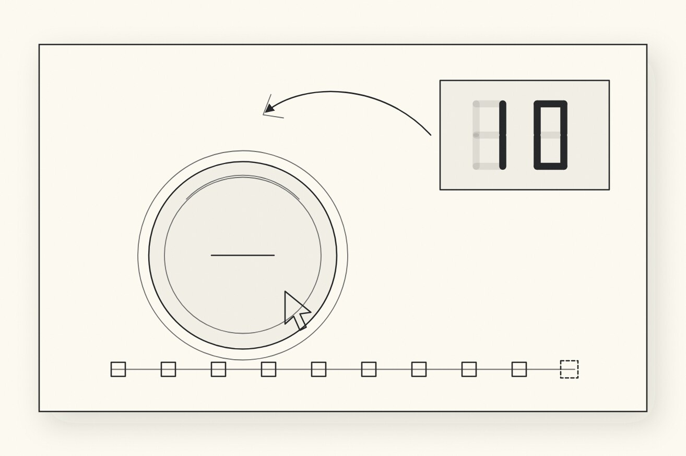

PRESS TO DECREMENT
Game jam · Interactive fictionThere is a button, and a number, and the number is ten.

My entry for the 96-hour GMTK Game Jam 2026, theme COUNT DOWN. It placed 50th of 10,600 entries for Creativity — top 0.5% — and 172nd for Narrative. My first finished game.
The idea
The countdown is the antagonist. Every press takes one off the number, and reaching zero is not a win — it closes a cycle, rebuilds the button slightly worse than it was, and starts again at ten. Zero is what causes the loop.
Which means the button is a machine that gets ground down every time you do what it asks. Over twenty-four cycles it works that out, and the game becomes a question about whether you keep pressing once you know.
Three ladders
Everything in the game climbs one of three ladders in lockstep. If an idea couldn't be placed on one of them, it didn't go in. That rule is most of why a jam game with this much text stays coherent.
- The typography is the character arc. All caps is a machine with no first person. Sentence case is a person emerging. Lowercase only happens when it has nothing left to defend. Three deliberate lowercase leaks land early, inside otherwise total tedium, and they do more than any effect in the game.
- The room wakes up rather than the player sinking. A single
depthvalue runs 0 → 1 across the whole game and drives palette, respiration, current and audio together. - Three registers of text that never blur. Speech gets a bubble and types out. System text gets no bubble and prints instantly, because CYCLE COMPLETE is the loop closing, not something anyone says to you. Giving it a speech bubble put it in the same voice as the button's confessions and flattened both.
Your body
You start as a cursor: an input device, as much a machine as the button is. The moment the button treats you as someone, you become one. The pointer gains weight, then mass and momentum, then a soft light — and when the button walls you off, pointing stops being enough and WASD is born mid-game. For the finale you are handed a plain arrow again. You are an operator, until you refuse.
The architecture
Plain HTML, CSS and native ES modules. No engine, no build step, and no asset files at all — everything is drawn to one canvas and every sound is synthesized at runtime. Three rules hold it together:
- The kernel knows nothing about any cycle. It owns the count and the zero-to-reset loop, and a cycle calls
decrement()only for a press that that cycle considers valid. All the difficulty lives in the cycles, none in the kernel. A cycle with no build step falls back to a plain ten-press round using its real dialogue, so the game is always playable end to end and an unfinished cycle degrades instead of breaking. - The display may lie. The voice may not. Screen output runs through an optional lie policy; the button's speech always reports the truth. That seam is load-bearing, because the ending only works if you have learned to trust the voice over the interface.
- One value gates every effect. Gradients, glow, grain, vignette, motes and bevel all multiply by the same atmosphere term. Anything that ignored it would leak the ending's mood into the opening and flatten the whole arc.
The game is an ordered array of cycle modules, so cutting or reordering the game is editing a list.
Three endings
You never pick one off a list. Each ending is just the shape of what you did with the last ten seconds. Two of them drop you back at the title with nothing kept, because that is what those endings are; only one stops.
Every ending reports your total time in the room — a clock that has run across every session since your very first press, persisted with everything else, and never once mentioned until then. Each one also closes by telling you how many of the three you have found, so no exit is a dead end, but the menu only admits there are others once you have reached one.
Built with
JavaScript with native ES modules, a canvas renderer with its own draw and layout primitives, canvas-drawn and hit-tested widgets, Web Audio for every sound, and localStorage persistence that lets the button notice you left and came back. No framework, no engine, no images.